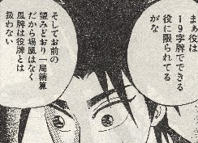
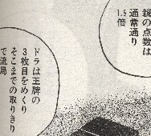
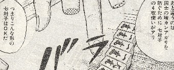
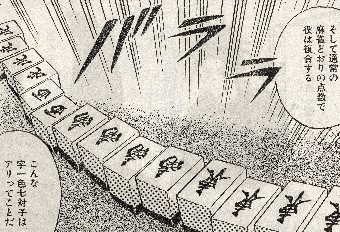
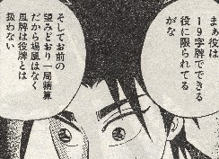
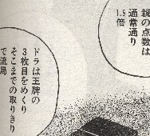
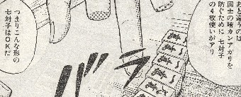
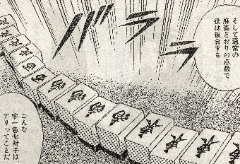

Tile game 牌ゲーム。
（40）幺九麻雀 近代麻雀に連載されている「ナグモ（画・前田治郎）」 それに登場した二人麻雀が、このヤオチュー麻雀（07.5.15号）。 最初はたわいもない話と思っていたけれど、連載を読んでいるうちに、「あれ？、面白そうじゃん」 ということで収録させていただくことにした。 ヤオチューマージャンは、１９字牌のみの52枚を使用する。細かいルールはこんな感じ。     細かいルールといっても非常にシンプル。なんか、時間ツブシに持ってこいの感じ。(^-^)
近代麻雀に連載されている「ナグモ（画・前田治郎）」
それに登場した二人麻雀が、このヤオチュー麻雀（07.5.15号）。
最初はたわいもない話と思っていたけれど、連載を読んでいるうちに、「あれ？、面白そうじゃん」 ということで収録させていただくことにした。
ヤオチューマージャンは、１９字牌のみの52枚を使用する。細かいルールはこんな感じ。
 
  細かいルールといっても非常にシンプル。なんか、時間ツブシに持ってこいの感じ。(^-^)
以前へ 以降へ 目次へ